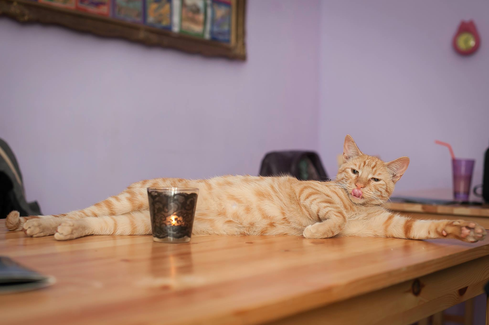

CatCafe a luat naștere din pasiunea noastră comună pentru pisici și cafea de calitate. Totul a început în 2025, când cele trei fondatoare - Roxana, Denisa și Ioana - și-au unit forțele pentru a crea un spațiu unic în Iași.
Ne-am dorit să oferim un refugiu atât pentru iubitorii de pisici, cât și pentru pisicile abandonate care au nevoie de un cămin temporar și o șansă la o familie iubitoare.
Fiecare pisică din cafeneaua noastră are propria poveste de supraviețuire. Le oferim îngrijire, atenție și iubire, în timp ce așteptăm ca vizitatorii noștri să le descopere și poate să le ofere un cămin permanent.